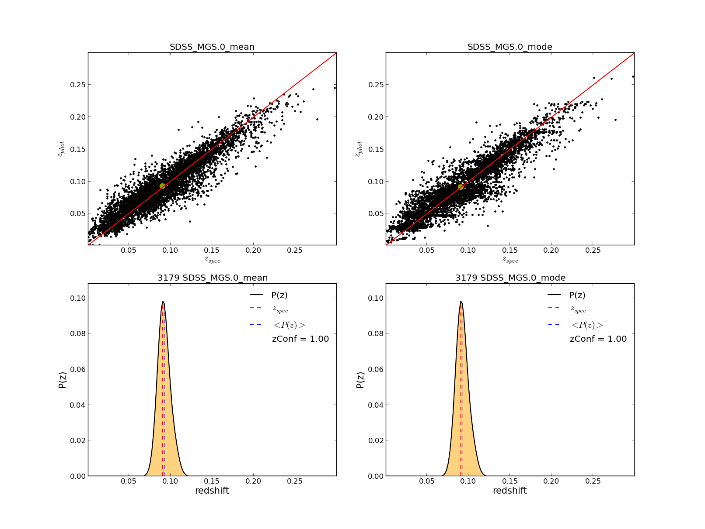
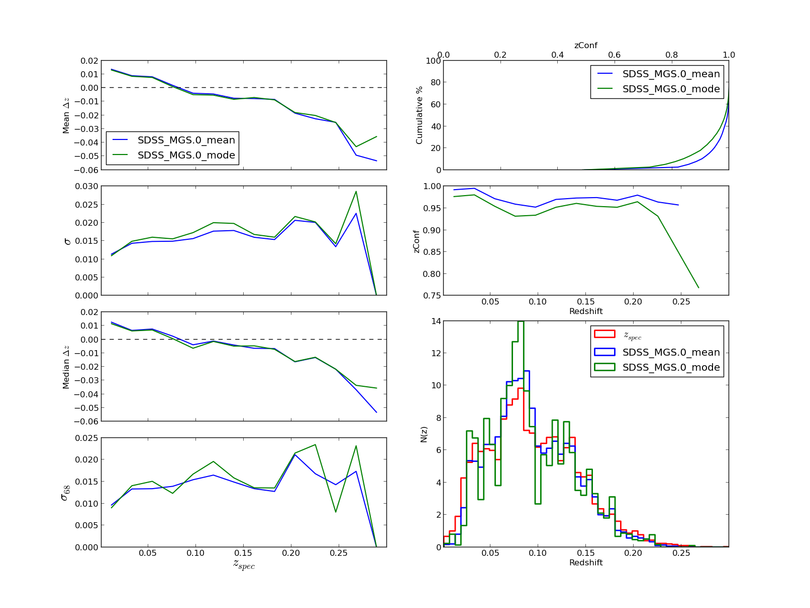
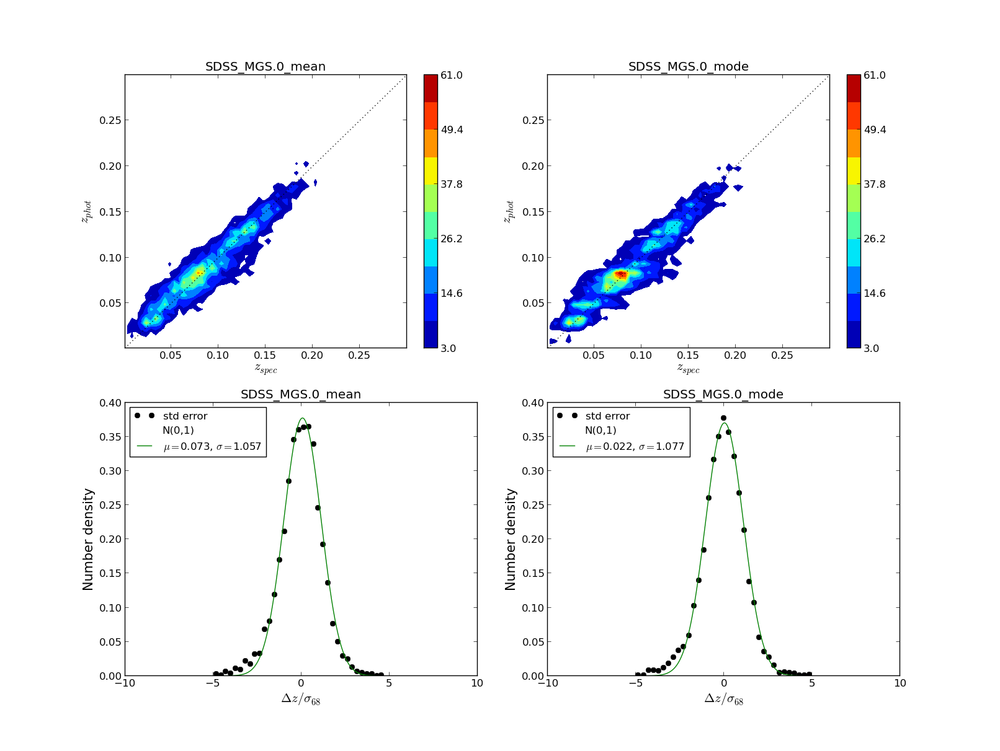
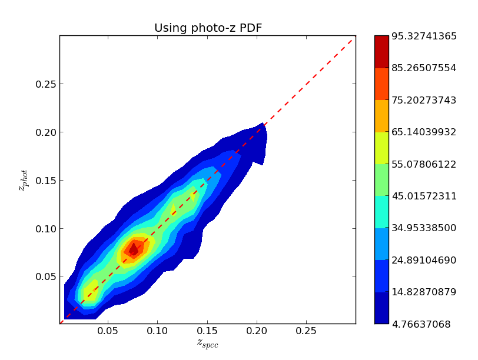
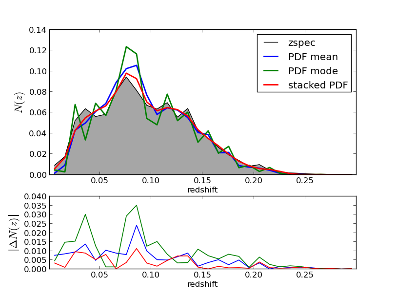
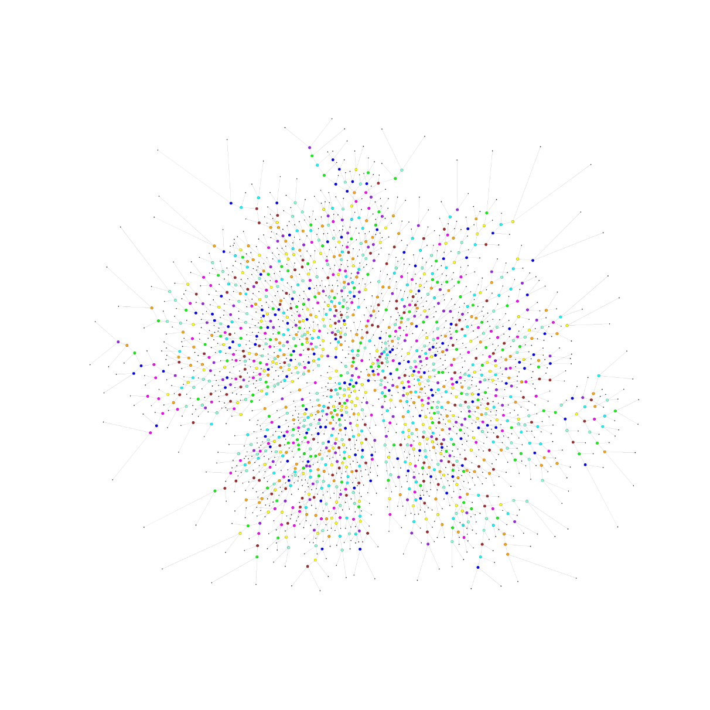
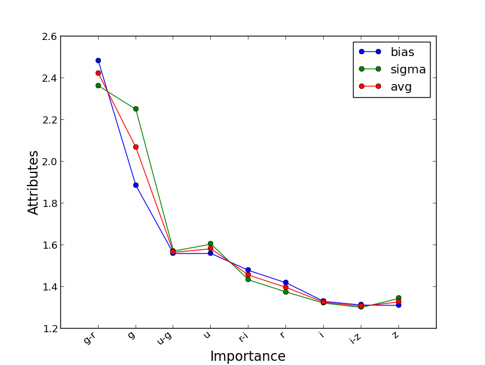
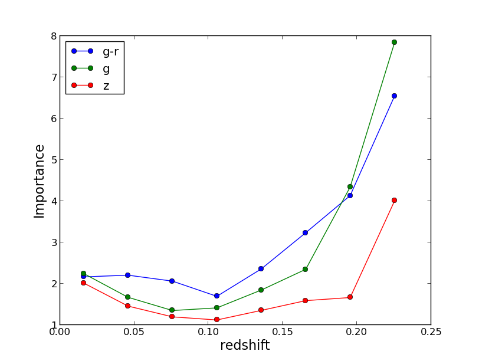

Running a test¶
Run on SDSS data¶
This distribution comes with a test folder where a example training set and a example testing set are located. This example correspond to a random subset of galaxies taken from the Main Galaxy Sample (MGS) from the SDSS. Each file has 5000 galaxies with spectroscopic redshift and magnitudes (model mag) and colors corrected by extinction in the 5 bands, u, g, r, i and z as well as their associated errors, making a total of 9 attributes. Make sure you look at Run MLZ for a general information on running MLZ
Note
This is a very small subsample of the whole catalog to illustrate the use of the MLZ and its capabilities. Also only few trees or maps are created for illustration, ideally hundreds of trees and maps are necessary
To run MLZ, type:
$ ./runMLZ test/SDSS_MGS.inputsTo run this example you must be located at the tpz/ folder, if using mpi4py type:
$ mpirun -n <cores> ./runMLZ test/SDSS_MGS.inputsMake sure <cores> matches your system. A view of the input file is here. The results are located in the folder mlz/test/results/ and the trees (or maps) are saved in tpz/test/trees/. There are some other parameters to control what phase to run or to manage the outputs.
Preview of results¶
MLZ comes with some plotting routines, check plotting for some of them and their parameters. It includes an interactive routine to preview the results. Within the main folder type:
$ ./plot/plot_results test/SDSS_MGS.inputs 0 0The first argument is the run number (every time TPZ increase this number by one) and the second argument is the confidence level zConf (see these references) for more information on this parameter and here for this routine plotting.Qplot.plot_results
Note
you can compare different runs (using different parameters for example) by adding two extra arguments with the number of the run and zConf for these results like ./plotting/plot_results.py test/SDSS_MGS.inputs 0 0 1 0 will show a comparison between the first and the second run with no zConf applied. If only 2 arguments are present after the input file, it shows a comparison for the mode and the mean for those results.
  Three figures like the following are displayed for a summary of the results, with shape of PDFs, statistics etc
{kind=link}
{kind=link}
{kind=link}
These figures have some user interaction as explained in the help window (shown below). For example by clicking different points in the zphot vs zspec figure is possible to visualize its PDF, or the colormap can be changed in figure 3, or change between zspec or zphot in the binning, etc...
All figures:
------------
* Q: close all figures
* q: close current figure
Figure 1:
---------
- Top Panel
* m, M: change color map
* +,- : change levels of countours
- Bottom Panel
* r/n : Toggle on/off Normal distribution
with N(0,1)
Figure 2:
---------
* p/t : Toggle plots in photo bins and spectroscopic bins
* o : Toggle on/off oob data when available
Figure 3:
---------
* Click on points to see its PDF
Some PDF examples¶
 Some examples on how to use the PDF to compute N(z) or a zphot vs zspec map there are some analysis routines for them, first we need to run some pre-analysis routine, if using mpi4py type:
$ mpirun -n <cores> ./utils/use_pdfs test/SDSS_MGS.inputs 0 0.1 30Making sure to enter the right number of cores, if using a serial version type:
$ ./utils/use_pdfs test/SDSS_MGS.inputsAfter this two extra files are created in the results folder with N(z) dist and a map, you can change the binning by changing the last argument in the command line , by default is 30. To plot these you can check plotting.Qplot.plot_pdf_use and type:
$ ./plot/plot_pdf_use test/SDSS_MGS.inputsAnd then you will see two figures like the following:
{kind=link}
{kind=link}
Plotting a tree or a map¶
You can plot one of the created tree during the process in order to visualize how would it look like:
$ ./plot/plot_tree test/SDSS_MGS.inputs 0Or if you used SOMz instead you can also plot a map using the following:
$ ./plot/plot_map test/SDSS_MGS.inputs 0Check plotting.Qplot.plot_tree and plotting.Qplot.plot_map for information. The previous commands will generate figures like the following:
{kind=link}
{kind=link}
Ancillary information¶
 If the extra information is set on the Input file template, i.e., OobError and VarImportance are set to yes, then extra information can be plotted as well, note thar these variables are independent and setting only OobError to yes is always recommended as is a unbiased version of the performance on the same training set which serves a s a cross-validation and can be very useful. To plot the importance check first plotting.Qplot.plot_importance and type within the main folder:
$ ./plot/plot_importance test/SDSS_MGS.inputsWhich generated two plots like the following:
{kind=link}
{kind=link}
Extra notes¶
These figures and commands are only an example on how to run and visualize the data, these are not the optimal set of parameters for every data sets, look at the references for more information on what are the best parameters and suggestion to take advantage of MLZ, increasing the number of trees or the resolution for SOMz (Ntop) always help, Natt is also important, for TPZ one could start with the square root of the number of attributes and for SOM with 2/3 of the number of attributes. Email me at mcarras2 at illinois.edu for questions or comments